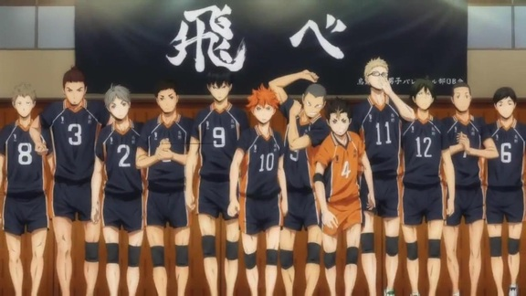
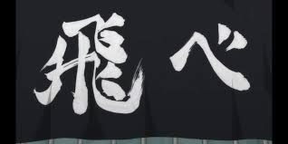

關於我們
一群熱愛排球的青少年，對排球運動充滿熱情，我們努力訓練、競爭，並享受著每一場比賽。
隊旗
展開翅膀，勇敢飛翔！我們已不是「落幕的強豪」「飛不起來的烏鴉」
成就
在過去的比賽中，我們取得了多項優異成績，包括地區比賽冠軍、季軍等。我們堅信團隊合作的力量，並將繼續努力奮鬥。
訓練
我們每週訓練多次，包括技術訓練、體能訓練和戰術訓練。我們的教練團隊專業而且有經驗，為我們的成長提供了良好的指導。
角色介紹
日向翔陽
烏野「最強的誘餌」
本作的男主角，性格明朗單純的努力家，和宛如對手一般存在的影山經常互相競爭。
影山飛雄
烏野「球場上的國王」
本作另一位男主角，北川第一中學出身，擁有極佳球感和技術的天才舉球員，被稱為「球場上的國王」。
月島營
烏野「機智的攔網手」
排球隊中現任隊員中身高第一的球員。
經常拿日向的身高來戲弄他。接球很弱，本人曾表示討厭接球。非常善於使用假動作。
澤村大地
烏野「不動的頂梁柱」
烏野高中男子排球部的主將，比起攻擊更擅長守備，對接球的技術很有自信，有著非比尋常的防守力。
菅原孝支
烏野「不屈的舉球員」
烏野高中男子排球部的副主將，和影山打相同的位置，
性格溫和並有著強大的包容心，常擔當阻止部員們暴走的角色。也有喜歡開玩笑的另一面。
田中龍之介
烏野「火爆的攻擊手」
有一個和尚頭，經常仰著首朝著對方囂張地說話。卻出奇地著重同伴之間的禮儀。
力量在球隊中僅次於東峰，是烏野第二強的主攻手，有著被逼到絕境時也絲毫不影響表現的強韌抗壓性。
東峰旭
烏野「玻璃心的王牌」
以充滿力量感的扣球為武器，是烏野少數的長參選手。從中學時就因扣球的強勁力道而為人所知，也有不少人聽過「西光台（旭出身的中學）的東峰」這個名號。
西谷夕
烏野的「守護神」
和影山一樣，對自己打的位置相當驕傲與自豪。也擁有在縣內能夠爭上一、二名的實力，並曾經在中學時代上得到過「最佳自由球員」的稱號。
山口忠
烏野「關鍵球的專家」
烏野排球隊中唯一一個不是先發成員的一年級，為了改變現狀，開始跟嶋田誠學習跳躍飄球。
緣下力
烏野「二年生的首領」
能把「二年級暴走二人組」（田中及西谷）牢牢地掌握在手中，有如「首領」一樣，是很有威信的人，在一年級中的影響力也在不斷擴大中。
烏養繫心
烏野高中排球部教練，烏養一繫的孫子。
武田一鐵
烏野高中的現代文老師，說話有點文藝。新上任的排球社顧問兼監督，沒有任何排球經驗。
清水潔子
有一頭秀麗的黑髮，左嘴角下有一顆痣，帶著眼鏡的極級美女，學生走過也會心動不已，排球部的女經理人。
谷地仁花
金色短髮，左邊用星星頭飾紮著小馬尾，家距離白鳥澤只有兩站。將接替潔子的排球社臨時新經理。